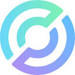

Et af de … temaer i NewDeal Invest
Krypto
Krypto er digitale penge og værdier, der registreres i en fælles bog på nettet.
Temaets selskaber miner bitcoin, driver handelsplatforme, udsteder digitale dollars eller ejer en beholdning af kryptovaluta. Fonden ejer aktier i selskaberne og ikke selve kryptovalutaen. I fonden består temaet af … selskaber.
Her udforsker du fondens selskaber i temaet. Udvalget dækker ikke hele teknologiområdet.
AI-genererede forklaringer og forenklede illustrationer · Om indhold og kilder
Her udforsker du fondens investeringer, ikke en fuldstændig gennemgang af teknologiområder eller selskaber. Selskabsbeskrivelserne bygger på selskabernes egne oplysninger og øvrige angivne kilder. De er ikke manuelt faktatjekket af NewDeal Invest og kan indeholde fejl eller være forældede.
Illustrationerne forenkler sammenhængene. En forbindelse viser ikke i sig selv et dokumenteret kunde- eller leverandørforhold. Fondstal vises særskilt med kilde og dato. NewDeal Invests egne kommentarer og citater er angivet med afsender og kilde.
Forandringen
Krypto er rykket ind i det almindelige finansielle system
Krypto er digitale penge og værdier, der registreres i en fælles bog på nettet, en blockchain. Ingen bank fører bogen. Tusindvis af computere har hver sin kopi og kontrollerer hinanden.
I USA er krypto blevet en del af det almindelige finansielle system. I januar 2024 kom de første børshandlede fonde med bitcoin, og i juli 2025 fik landet sin første lov om stablecoins, GENIUS Act. I EU gælder fælles regler for kryptoaktiver, MiCA.
Stablecoins, digitale mønter der skal svare til én dollar, bliver brugt til at flytte penge hurtigt mellem lande og platforme.

Renter af reserverne658 mio. dollarPengene bag USDC står i bl.a. kortfristede amerikanske statsobligationer- Salg af ARC-tokens182 mio. dollarEt engangssalg i kvartalet
- Anden omsætning25 mio. dollarTjenester og abonnementer
Når renten falder, tjener Circle mindre på de samme reserver. Renten på reserverne var 3,5 % i kvartalet.
Prøv selv
Skriv en side i bogen
En blockchain er en bog, der skrives side for side. Hver side kaldes en blok. Læg handlerne i blokken, lås den, og prøv derefter at snyde i en gammel side.
- Læg handler i blokken
- Lås blokken
- Prøv at snyde
Ventende handler
- Anna sender 0,1 bitcoin til Bo
- Carl køber bitcoin i en app
- Dina sender 0,02 bitcoin til Emil
- Frida sælger bitcoin i en app
Blokken er fuld. Nu skal den låses. Computerne prøver tal efter tal, indtil blokkens fingeraftryk begynder med nok nuller. Det tager mange forsøg, og det er det arbejde, minerne bliver belønnet for.
Forsøg: 0
Blok 4 er låst og hænger nu sammen med blok 3. Hver blok bærer fingeraftrykket fra blokken før. Prøv at ændre en handel i blok 2.
Blok 2 får et nyt fingeraftryk, og det passer ikke længere med blok 3 og 4. Alle andre kopier af bogen kan se, at der er snydt, og afviser ændringen.
Fondens selskaber i eksemplet
- Skriver i bogen
- Åbner døren til bogen
- Ejer en beholdning
- Udsteder digitale dollars
Blok 1
3 handler
00a7f2…
Blok 2
5 handler
0031c9…
Blok 3
4 handler
00e85b…
Blok 4
Ikke låst
Tegnet eksempel. I bitcoin bliver en ny blok skrevet omkring hvert tiende minut, og en blok rummer mange flere handler. Andre blockchains låser blokkene på andre måder end med mining.
Forretningsmodellerne
Fire måder kryptoselskaberne tjener penge på
Fonden ejer aktier i selskaberne og ikke selve kryptovalutaen. Selskaberne har hver sin rolle omkring bogen. Bjælken viser, hvor meget hver rolle fylder i fonden.
Skriver i bogen
…af fonden
Store haller med specialcomputere kontrollerer og skriver nye poster i bitcoins bog. Det arbejde kaldes mining. Selskaberne tjener på den belønning, netværket betaler i nye bitcoin og gebyrer. Strøm og udstyr er de store udgifter, og flere bygger nu også datacentre til AI.
Åbner døren til bogen
…af fonden
Kunderne køber, sælger og opbevarer kryptovaluta gennem en app eller en handelsplatform. Selskaberne tjener især på kundernes handel og på tjenester omkring deres beholdninger. Gemini er ved at lukke driften i Storbritannien, EU, andre europæiske lande og Australien.
Ejer en beholdning
…af fonden
Selskabernes vigtigste ejendel er en beholdning af én bestemt kryptovaluta. Strategy ejer især bitcoin, de andre især ether, solana eller HYPE. De tjener penge på forskellige måder. Strategy har også en softwareforretning, og Bit Digital får det meste af omsætningen fra at leje computerkraft ud til AI.
Udsteder digitale dollars
…af fonden
En stablecoin er en digital mønt, der skal svare til én dollar. Circle udsteder USDC og bytter den tilbage til dollars, én til én. Circle tjener især renter af de penge, der ligger i reserve bag mønterne. Det andet selskab har ingen egen drift endnu og har aftalt at gå sammen med First Digital Group.
Andre af fondens selskaber hører også til her, men tælles under et andet tema: Figure og Robinhood (Fintech).
Rollerne er NewDeal Invests egen opdeling. Beskrivelserne bygger på selskabernes egne årsrapporter, se kilderne. Andele i PMINDI pr. … (fondens data).
Det har vi skrevet
NewDeal Invests perspektiv
Ordret uddrag af NewDeal Invests egne ugebreve og indlæg om temaet, med dato og link til hele teksten. Det er ikke en anbefaling.
Læs hele teksten på bloggen (åbner i nyt vindue)"Tilbage til blockchain. Med GENIUS Act og CLARITY Act har USA ændret rammevilkårene for blockchainindustrien dramatisk."
Risici
Risici ved krypto
Aktier, ikke mønter
Fonden ejer aktier i selskaberne. Det er ikke det samme som at eje kryptovaluta, og aktierne kan udvikle sig anderledes end kurserne.
Kryptokurser
Prisen på kryptovaluta kan svinge meget. Det rammer beholdningerne, minernes indtægt og hvor meget kunderne handler.
Strøm og udstyr
Minerne har store udgifter til strøm og specialcomputere. Falder kursen på bitcoin, kan udgifterne blive større end indtægterne.
Regler
I EU gælder MiCA, og i USA er der kommet nye love. Nye regler kan ændre, hvordan selskaberne må drive forretning.
Tyveri og fejl
Kryptoaktiver kan blive stjålet, fx hvis nogen får fat i de koder, der giver adgang til dem. Det kan ramme både børser og selskaber med en beholdning.
Kilder: Finanstilsynet om MiCA (åbner i nyt vindue) og risikoafsnittene i årsrapporterne for 2025 fra Riot Platforms (åbner i nyt vindue), Coinbase (åbner i nyt vindue), Strategy (åbner i nyt vindue) og Circle (åbner i nyt vindue). Listen er et udvalg og ikke en fuldstændig oversigt.
Kilder og kreditering
Tal og tekst
- Temaer og roller: NewDeal Invests egen opdeling.
- Circle i 3. kvartal 2026 (USDC i omløb 73,9 mia. dollar ved kvartalets udgang, 13,9 billioner dollar flyttet med USDC, omsætning 865 mio. dollar, heraf renter af reserverne 658 mio., salg af ARC-tokens 182 mio. og anden omsætning 25 mio., renten på reserverne 3,5 %): Circles regnskabsmeddelelse, 4.11.2026 (åbner i nyt vindue).
- Hvad selskaberne laver: årsrapporterne for 2025 fra Coinbase (åbner i nyt vindue), Riot Platforms (åbner i nyt vindue), CleanSpark (åbner i nyt vindue), Strategy (åbner i nyt vindue), Bit Digital (åbner i nyt vindue), Circle (åbner i nyt vindue) og Gemini (åbner i nyt vindue). Sammenlægningen af CSLM Digital Asset Acquisition Corp III og First Digital Group: 8-K indberettet 7.10.2026 (åbner i nyt vindue).
- Love: GENIUS Act, Public Law 119-27 (åbner i nyt vindue) og Finanstilsynet om MiCA (åbner i nyt vindue).
- Citatet: NewDeal Invest, "Makrodata sætter dagsordenen", 7.7.2025 (åbner i nyt vindue).
Tegninger og logoer
- Bogen med blokkene, figurerne og ikonerne er forenklede tegninger lavet af NewDeal Invest med hjælp fra AI. Personerne i eksemplet er opfundet.
- Logoer tilhører de enkelte selskaber.